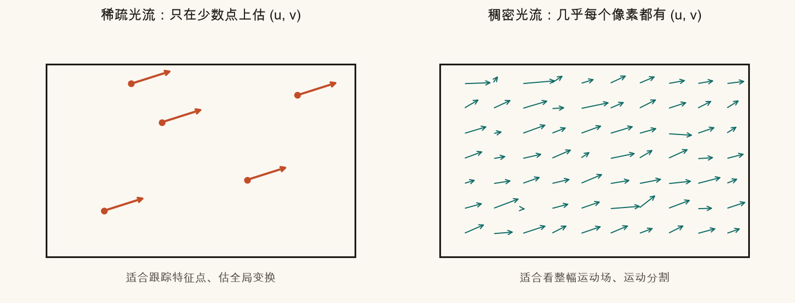
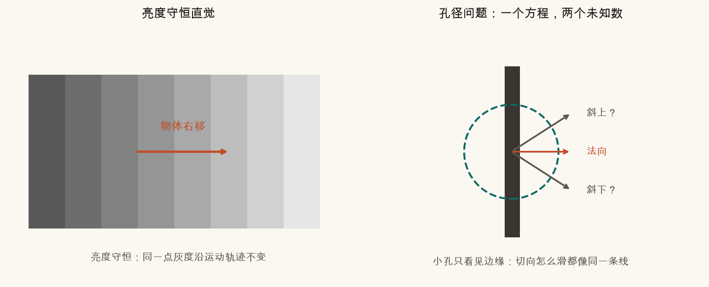
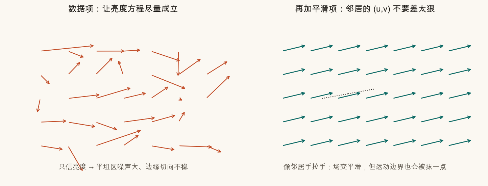
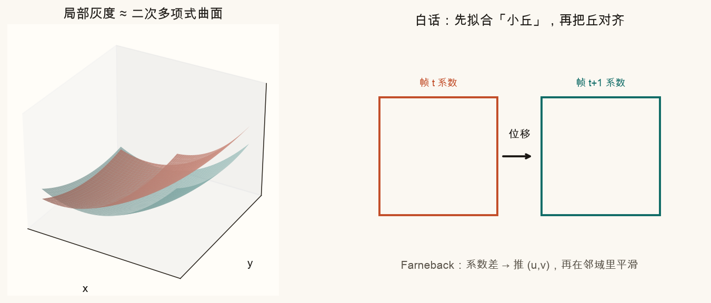
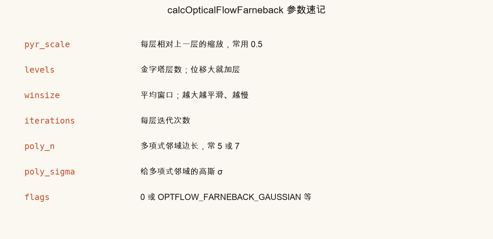
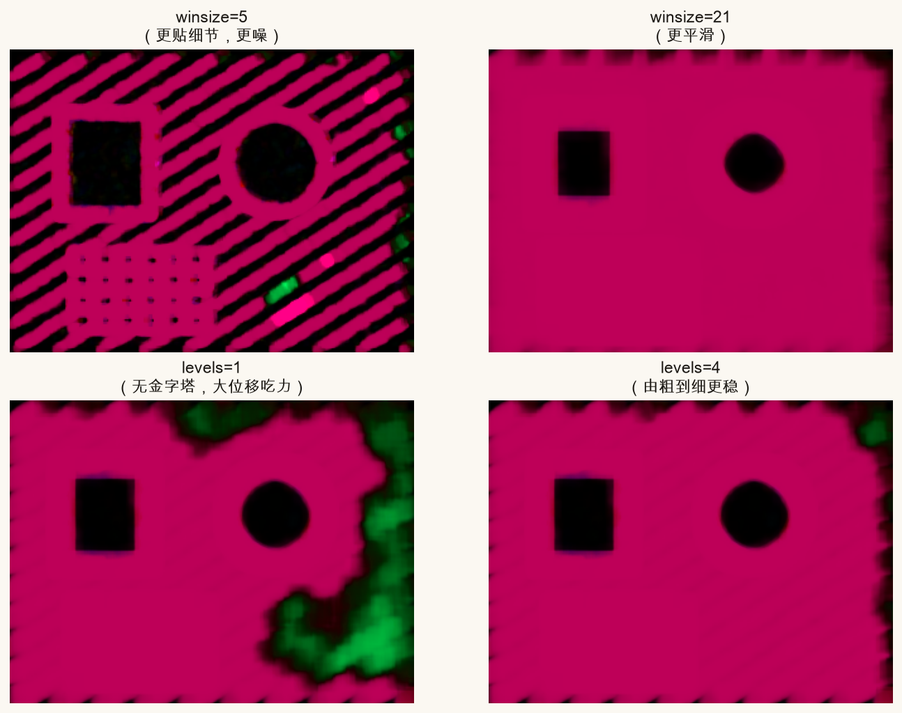
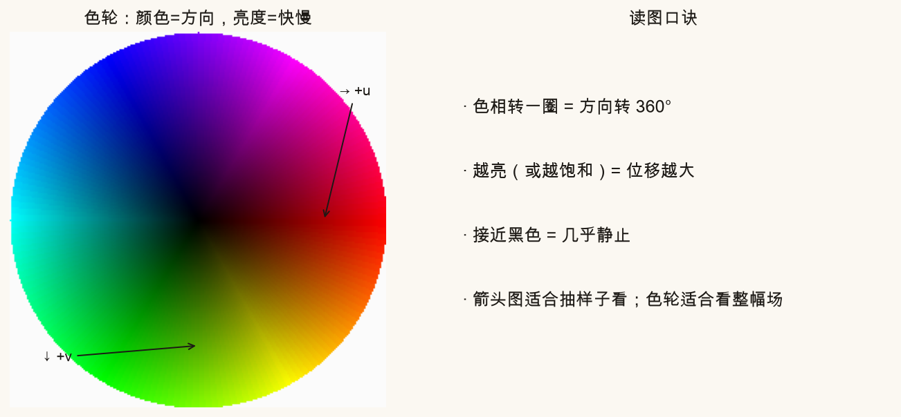
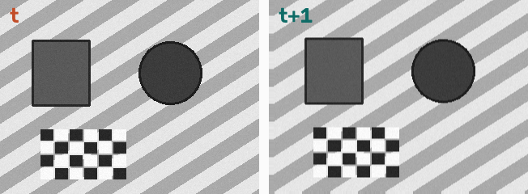
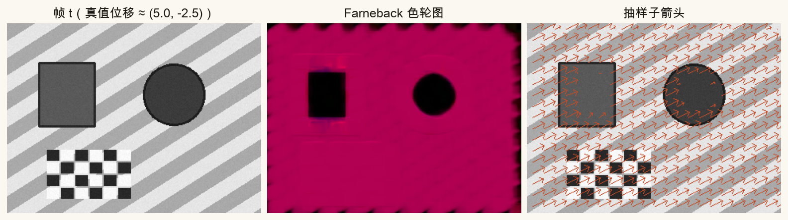
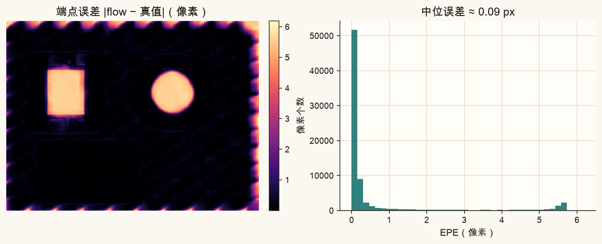

第 17 篇 · 光流重点 · 约 60 分钟
稀疏光流只在特征点上给箭头；稠密光流要求几乎每个像素都有一个位移 (u, v)。本篇从「一个方程不够」讲到平滑先验的直觉，再用「拟合小丘再对齐」讲清 Farneback，并逐项拧 OpenCV 参数、学会色轮读图。
回顾：光流问的是「这一帧里的某个点，下一帧跑到哪」。写成位移：
x′ = x + u， y′ = y + v
第 15–16 篇的 Lucas-Kanade 通常只在稀疏特征点上求 (u, v)。稠密光流则输出一张和图像同高同宽的「运动场」：每个像素两个浮点数，OpenCV 里形状是 H × W × 2，通道 0 是 u（向右为正），通道 1 是 v（向下为正，和图像坐标一致）。

防抖里常先用稀疏跟踪估全局变换；要抠出「前景行人相对背景怎么流」，就更常看稠密场。两条线不是互斥，是工具箱里不同的扳手。
经典出发点叫亮度守恒：同一物理点，短时间内灰度近似不变。记 I(x, y, t) 为灰度，位移很小并做一阶展开，得到光流约束方程：
Ix u + Iy v + It = 0
白话：空间梯度 (Ix, Iy) 告诉你「亮度往哪边变陡」，时间变化 It 告诉你「亮度变亮还是变暗」。方程说：沿运动方向「爬坡」造成的亮度变化，要刚好抵消时间上看到的变化。
麻烦在于：一个方程、两个未知数 u 和 v。就像只告诉你「投影长度」，推不出完整向量——这就是孔径问题：透过小孔只看见一条边缘时，你只能约束垂直于边缘的分量，沿着边缘滑多少都看起来一样。

所以任何稠密算法都必须再加假设。常见两条路：
Farneback 更像「局部拟合灰度曲面 + 邻域平滑」，下面分开说。
Horn-Schunck（1981）把问题说成：找一整张 (u, v) 场，让下面这个「总难受程度」尽量小——
E = Σ (Ix u + Iy v + It)2 + α Σ (‖∇u‖2 + ‖∇v‖2)
不用会变分法。把它想成两股力在拔河：

本篇不推导欧拉-拉格朗日方程，也不实现 HS 迭代。你只要记住：稠密光流 = 亮度约束 + 额外先验；平滑先验是最经典的一种。Farneback 用另一套局部模型，但「邻域一致」的味道还在。
Gunnar Farneback 的想法可以记成一句话：别盯单个像素的灰度，先把局部小窗口拟合成一块光滑的「灰度小丘」，再看两帧的小丘怎么对齐。
具体一点（仍保持白话）：
poly_n、poly_sigma 控制这块邻域多大、多平滑。winsize 有关），并配合图像金字塔：先在小图上抓大步位移，再逐层精炼——和第 16 篇金字塔 LK 是同一类「由粗到细」。
相对「逐像素硬解亮度方程」，多项式拟合天然带一点平滑，对噪声更稳；代价是运动边界、遮挡处仍会糊，极大位移仍要靠金字塔层数撑着。
OpenCV 调用长这样（灰度图，uint8）：
flow = cv2.calcOpticalFlowFarneback(
prev, next, None,
pyr_scale, levels, winsize, iterations,
poly_n, poly_sigma, flags
)
# flow.shape == (H, W, 2)，dtype float32
| 参数 | 典型值 | 它在干什么 | 拧大 / 拧小 |
|---|---|---|---|
pyr_scale |
0.5 | 金字塔每一层相对上一层的边长比例 | 接近 1：层间变化小、层数要更多才覆盖大位移；0.5 最常用 |
levels |
3 | 金字塔层数（含原图层） | 位移大 → 加层；层太多会在过糊的顶层估错，再往下传错 |
winsize |
15 | 平均窗口边长 | 越大越平滑、越抗噪、越慢，边界越糊；太小则噪、碎 |
iterations |
3 | 每一层上的迭代次数 | 略增可能更准；过大收益递减、更费时 |
poly_n |
5 或 7 | 拟合多项式用的邻域大小 | 7 更稳更糊；5 更跟细节。需为奇数 |
poly_sigma |
1.1–1.5 | 给多项式邻域的高斯平滑 σ | 与 poly_n 搭配：邻域大时可略增 σ |
flags |
0 | 附加选项 | OPTFLOW_USE_INITIAL_FLOW 用已有 flow 当初值；OPTFLOW_FARNEBACK_GAUSSIAN 用高斯窗代替盒式窗（通常更平滑） |

第三个参数 flow 传 None 表示从零开始估。视频连续帧时可把上一帧的 flow 传进去，并加上 OPTFLOW_USE_INITIAL_FLOW，往往更快、更稳。
稠密场若每个像素都画箭头，会糊成一团。常用两种看法：




脚本里色轮的核心几行（HSV → BGR）：
mag, ang = cv2.cartToPolar(flow[...,0], flow[...,1], angleInDegrees=True)
hsv[...,0] = ang / 2 # OpenCV 的 H 是 0–180
hsv[...,1] = 255
hsv[...,2] = 按幅度归一化到 0–255
bgr = cv2.cvtColor(hsv, cv2.COLOR_HSV2BGR)下面两个示意不需要 Python：先建立「平滑先验」和「色轮读方向」的手感。
橙色箭头偏「只信数据」（故意加点噪声）；青色是平滑后的场。拖 α，看场怎样从乱变齐，以及运动边界怎样被抹。
在色轮上点击或拖动：读出方向角、幅度，以及对应的 (u, v)。右侧示意「这种颜色在稠密图里代表什么运动」。
在系列根目录（能看见 index.html）激活虚拟环境后：
source .venv/bin/activate
MPLCONFIGDIR=/tmp/mpl-cache python code/ch17_dense_flow.py成功时终端出现「自检通过」，并写出：
assets/figures/ch17_sparse_vs_dense.png、ch17_brightness_aperture.png、ch17_horn_schunck_energy.png、ch17_farneback_poly.pngch17_flow_colorwheel.png、ch17_farneback_result.png、ch17_flow_error.png、ch17_params_compare.png、ch17_params_card.pngassets/images/ch17_pair.png、ch17_flow_color.png、ch17_flow_arrows.png、ch17_colorwheel.pngassets/figures/ch17_my_flow.png打开 code/ch17_dense_flow.py。顶部「改这里」只影响 ch17_my_flow.png；课文对照图仍按固定参数重画。
MY_SHIFT_X = 6、MY_SHIFT_Y = -3 改成 12 与 -1，保持其它参数。看中位估计是否跟得上；若偏差变大，把 MY_LEVELS 加到 4 再跑。MY_WINSIZE 改成 5，再改成 31。小窗口色轮更噪，大窗口更匀、边界更糊。MY_LEVELS = 1，位移仍用比较大的值（例如 12 像素）。观察估计是否明显变差——这就是金字塔的价值。MY_POLY_N 在 5 与 7 之间切换，体会「更跟细节」和「更稳更糊」。先自己答，再展开。
H × W × 2。通道 0 是水平位移 u（向右为正），通道 1 是竖直位移 v（向下为正）。
一个方程两个未知数。几何上对应孔径问题：沿边缘切向的运动在局部无法区分，必须加窗口共用、平滑先验或其它假设。
场更平滑、噪声更小，但真实运动边界更容易被抹糊；数据项的话语权相对变弱。
在局部用多项式（二次曲面）拟合灰度，比较两帧的拟合系数得到位移，再结合邻域平均与金字塔由粗到细。
winsize 与 levels 各优先解决什么问题？winsize 管平滑与抗噪（太大糊边界）；levels 管大位移（由粗到细）。位移大先加层，场太噪先略加大窗口。
颜色（色相）编码运动方向；明暗（或饱和度）编码运动幅度。接近黑色通常表示几乎静止。
下一篇专门谈怎么评价、怎么画、怎么翻车：EPE、遮挡与光照、重复纹理，以及和深度学习光流（如 RAFT）的对照；并收束稀疏 vs 稠密各自适合什么。